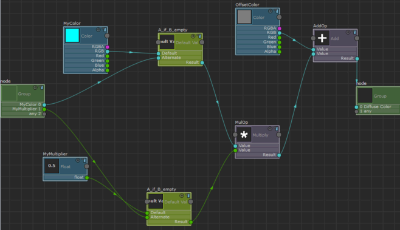
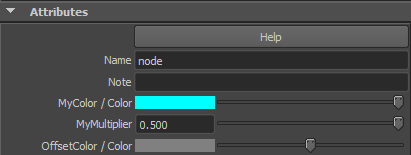
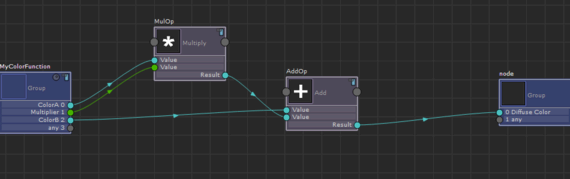

创建新组
- 单击组节点上的
 以进入组视图。
以进入组视图。 - 选择“硬件着色器节点 > 数学 > 相加”(Hw Shader Nodes > Math > Add)和“硬件着色器节点 > 值 > 颜色”(Hw Shader Nodes > Value > Color)，以分别创建“相加”(Add)节点和“颜色”(Color)节点。
- 连接节点，如下所示：
- 将“颜色”(Color)的“RGB”属性连接到“相加”(Add)的“值”(Value)属性。
- 将“相乘”(Multiply)的“结果”(Result)属性连接到“相加”(Add)的“值”(Value)属性。
- 将“相加”(Add)的“结果”(Result)属性连接到组节点的“漫反射颜色”(Diffuse Color)属性。
- 选择新创建的“颜色”(Color)节点。在“属性编辑器”(Attribute Editor)中，输入名称 OffsetColor 和顺序编号 3。 
OffsetColor 现在显示在组节点“属性编辑器”(Attribute Editor)中。

将组转化为函数
- 选择“相乘”(Multiply)和“相加”(Add)，然后选择“组 > 创建组”(Group > Create Group)。
- 单击新创建组上的 。在组视图中，选择组节点，然后在“属性编辑器”(Attribute Editor)的“名称”(Name)字段中输入 MyColorFunction。
- 在“属性编辑器”(Attribute Editor)中，启用“组是函数”(Group is a function)，以便在着色器代码中将这些节点的输出封装为函数。
- 为组节点端口指定唯一名称。当前，所有端口都命名为“值”(Value)，因此着色器无效，并在 Viewport 2.0 中显示为红色。
在“属性编辑器”(Attribute Editor)中，填写以下信息：
- “活动套接字”(Active socket)：0；“活动套接字标签”(Active socket label)：ColorA
- “活动套接字”(Active socket)：1；“活动套接字标签”(Active socket label)：Multiplier
- “活动套接字”(Active socket)：2；“活动套接字标签”(Active socket label)：ColorB
注： 将组转化为函数时，所有组节点端口必须具有唯一的名称。否则，着色器将变为无效。 - 退出组视图，然后选择“工具 > 计算图表”(Tools > Compute Graph)。
保存着色器文件并检查着色器代码
- 选择“材质”(Material)节点，在“属性编辑器”(Attribute Editor)中输入着色器文件的文件名并按
 ，然后单击“HwShader/保存到磁盘”(HwShader/Save to Disk)。
，然后单击“HwShader/保存到磁盘”(HwShader/Save to Disk)。 保存着色器文件的路径在“ShaderFX”编辑器窗口中显示为工具提示。
- 检查着色器文件并搜索 MyColorFunction。
MyColorFunction 定义为着色器文件中的函数。SHADERDATA 结构被列为输入。这是默认设置。
- 若要禁用 Cleaner 代码的此设置，请输入 MyColorFunction 组的组视图，选择组节点，然后在“属性编辑器”(Attribute Editor)中启用“不添加 DATA 结构作为函数输入”(Don't add DATA struct as function input)。
重新保存着色器文件，以查看 SHADERDATA 结构是否不再列为输入参数。